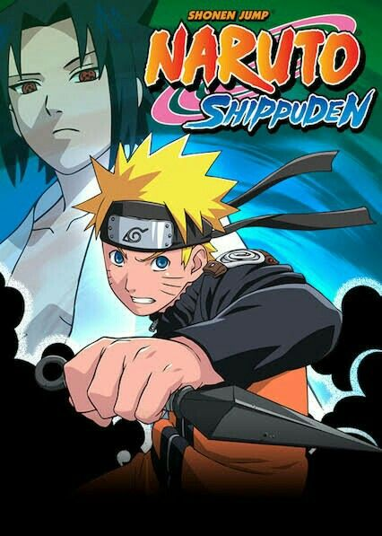

Naruto Shippuden

SINOPSE
- Naruto Shippuden é a continuação direta de Naruto Clássico, criada por Masashi Kishimoto. A história começa dois anos e meio após Naruto ter deixado a Vila da Folha para treinar com o lendário ninja Jiraiya. Agora mais maduro e poderoso, Naruto retorna determinado a trazer seu amigo Sasuke Uchiha de volta, que abandonou a vila em busca de força para vingar seu clã.